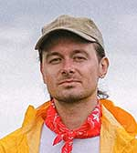

Target Audience
Target audience for this site is people who are ages between 14 years old and 65 years old living in the cities around city of Preston.They often earnestly look for local events and activities in Preston. They often trust some local websites which contains local weather information to link the local events. They normally attend to those events with friends and families to enjoy snacks and food so they go with some belongings.
Personas
Kimberly Redmond
Kimberly is a woman who is married and has 1 boy and 1 girl. She is a university graduate and is a data analyst. But, she is currently at home taking care of her small children. Her husband's work allows some day time activities as a family. His parents who live close to them often look for opportunities to get together with them.
Hugo Bernick
Hugo has lived whole life in Preston. He owns a business to rent audio equipments for local events. His business also promotes in every local events so he is very attentive to local websites not only to look for events but also to intent to find adequate websites for online ads. He has a wife who helps his business full time.
Scenarios
What is the weather going to change this week end at the main park where I'm going to have my child's event?
What are the foil meals for children's camping?
How is going to be the water level in the river in the afternoon?
How can we get outdoor tables and chairs cheapest?
Are the local parks have enough parking lot?